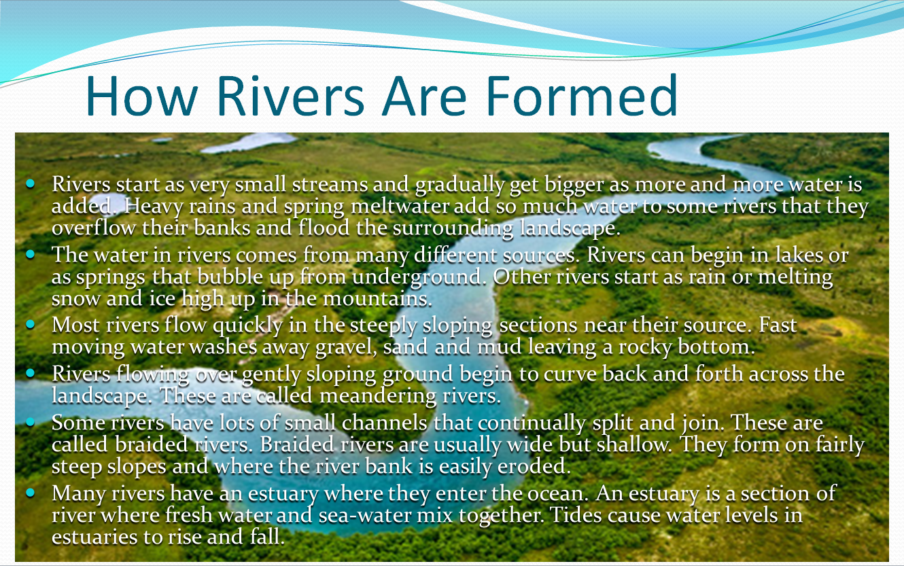

1.2. Disseny i creació de diapositives
Disseny de Diapositives
El disseny de diapositives és un aspecte fonamental per a l'èxit d'una presentació visualment atractiva i efectiva. El disseny adequat no només millora la comprensió de la informació, sinó que també facilita la retenció del missatge per part de l’audiència.
Normes bàsiques de composició i disseny
A l'hora de crear diapositives, cal tenir en compte algunes regles bàsiques per garantir una composició clara i eficaç:
-
Simplicitat:
- Eviteu sobrecarregar les diapositives amb massa text o imatges. Les diapositives han de complementar el discurs del presentador, no substituir-lo.
- Utilitzeu una idea o concepte per diapositiva. Això ajuda l'audiència a concentrar-se i processar la informació d'una manera més eficient.
-
Jerarquia Visual:
- Organitzeu el contingut utilitzant una jerarquia clara per destacar la informació més important.
- Utilitzeu diferents mides de text (títols més grans, subtítols i contingut principal amb mida menor) per marcar la importància dels elements.
-
Espai en Blanc:
- L'espai en blanc (o espai negatiu) és crucial per donar respir a la diapositiva i permetre que els elements destacats sobresurtin.
- Eviteu saturar les diapositives amb elements que competeixin entre si per l'atenció. L'ús equilibrat de l'espai millora la comprensió.
-
Fonts:
- Trieu una font llegible i consistent al llarg de tota la presentació. Les fonts sans-serif, com Arial o Calibri, són bones opcions per la seva claredat en pantalla.
- Limiteu-vos a dues fonts diferents com a màxim per mantenir la coherència tipogràfica (una per als títols i una altra per al cos del text).
-
Colors:
- Utilitzeu una paleta de colors limitada i coherent amb el tema de la presentació. Els colors poden transmetre emocions, però també poden distreure si no es fan servir amb cura.
- Eviteu combinacions de colors que facin difícil la lectura del text o que no tinguin prou contrast (com text clar sobre fons clar).
Importància de la Coherència Visual
La coherència visual és clau per garantir que totes les diapositives semblin part d’un conjunt unitari i professional. Una presentació coherent ajuda l'audiència a seguir el fil conductor del discurs sense distraccions visuals.
-
Estils Unificats:
- Mantingueu un estil visual consistent al llarg de tota la presentació. Això inclou la mateixa paleta de colors, les mateixes fonts i el mateix disseny de fons.
-
Ús d’Eines de Disseny:
- Feu servir plantilles predissenyades o patrons de diapositives per assegurar la coherència en termes de col·locació d'elements, mides de text i colors.
-
Transicions i Animacions:
- Si s'utilitzen transicions entre diapositives o animacions dins d’elles, aquestes han de ser coherents i moderades. Les animacions massa elaborades poden distreure l'audiència i trencar la fluïdesa de la presentació.
Escollir un Fons Adequat
El fons d'una diapositiva juga un paper important en la seva llegibilitat i impacte visual. Un bon fons ha de complementar el contingut sense robar-li protagonisme.
-
Fons Simples:
- Escolliu fons simples i nets que no competeixin amb el text ni amb les imatges. Un color pla o un degradat suau pot ser una bona elecció.
-
Contrast amb el Text:
- Assegureu-vos que el fons ofereixi un bon contrast amb el text per garantir la llegibilitat. Per exemple, text clar sobre fons fosc o text fosc sobre fons clar.
-
Evitar Fons Complexos:
- Els fons amb imatges detallades o patrons complexos poden dificultar la lectura del contingut i distreure l'audiència. Si es vol utilitzar una imatge com a fons, és recomanable ajustar la seva opacitat per suavitzar-la.

Ús de Patrons de Diapositives
Els patrons de diapositives (també coneguts com a "patrons mestres") són eines essencials en LibreOffice Impress per crear dissenys coherents i unificats en totes les diapositives d'una presentació. Un patró de diapositiva defineix l'estructura general de la diapositiva, incloent-hi elements com el fons, la mida i el tipus de lletra, les capçaleres, peus de pàgina i altres elements repetitius. Utilitzar patrons facilita la creació de presentacions uniformes i professionals, sense haver de repetir manualment els mateixos ajustos diapositiva per diapositiva.
Què es pot definir en un Patró de Diapositiva?
Un patró de diapositiva permet personalitzar elements globals que es reflectiran a totes les diapositives que en facin ús. Els elements més comuns que es poden definir inclouen:
- Fons de diapositiva:
-
Podeu definir un fons consistent per a tota la presentació. Això inclou colors sòlids, degradats, imatges o patrons. Utilitzar un fons uniforme millora la coherència visual de la presentació.
-
Fonts i Estils de Text:
-
Els estils de text, incloent-hi el tipus de lletra, la mida i el color, es poden establir de manera consistent per a títols, subtítols i text principal. Això garanteix que totes les diapositives utilitzin les mateixes especificacions tipogràfiques.
-
Capçaleres i Peus de pàgina:
-
Podeu incloure capçaleres i peus de pàgina a totes les diapositives per mostrar informació com el nom de la presentació, el logotip de l'empresa, la data o el número de diapositiva. Aquests elements es col·loquen automàticament a la mateixa posició a totes les diapositives.
-
Posició dels elements:
- El patró permet definir la posició estàndard dels quadres de text, les imatges i altres elements de contingut, assegurant una distribució visual consistent en tota la presentació.
Crear un Patró de Diapositiva
Per crear un patró de diapositiva a LibreOffice Impress, seguiu aquests passos:
- Aneu a la vista de Patró de Diapositives:
- A la barra de menús superior, feu clic a Visualitza > Patró de diapositives.
-
Això us portarà a una vista específica on podeu editar el patró mestre. Aquí podreu veure un esbós del patró de diapositiva amb espais per a títols, text i altres elements comuns.
-
Personalitzeu el disseny:
- Podeu afegir o eliminar elements com quadres de text, capçaleres, peus de pàgina o números de diapositiva.
- Definiu el fons que voleu aplicar a totes les diapositives, ja sigui un color sòlid, un degradat, o una imatge.
- Seleccioneu la font i la mida de lletra per a títols i contingut del cos de text. És recomanable utilitzar fonts senzilles i llegibles.
-
Afegiu logotips o altres gràfics que vulgueu que apareguin en totes les diapositives.
-
Configurar capçaleres i peus de pàgina:
-
Aneu a Insereix > Capçalera i Peu de pàgina per afegir aquests elements a totes les diapositives. Podeu configurar informació com el número de diapositiva, la data, el nom de l'autor, o altres detalls que vulgueu que apareguin de manera uniforme.
-
Desa i tanca el patró:
- Un cop hàgiu configurat el patró, tanqueu la vista de patró fent clic a Tanca la vista de patró de diapositives. A partir d'ara, totes les diapositives noves que afegiu a la presentació utilitzaran aquest patró per defecte.
Aplicar un Patró a Diapositives Existents
Si ja teniu diapositives creades i voleu aplicar-hi un patró de diapositiva, seguiu aquests passos:
-
Seleccioneu les diapositives que voleu modificar (podeu seleccionar múltiples diapositives utilitzant la vista de miniatures al costat esquerre).
-
Aneu a Diapositiva > Disseny de diapositiva a la barra de menús superior.
-
Trieu el patró de diapositiva que voleu aplicar a les diapositives seleccionades. Els patrons disponibles es mostren en una llista. Seleccioneu el patró adequat i feu clic a Aplica a les diapositives seleccionades.
Ús Efectiu dels Patrons de Diapositives
Els patrons de diapositives són especialment útils per garantir que totes les diapositives tinguin un aspecte uniforme. Algunes bones pràctiques per treure el màxim partit d'aquests patrons inclouen:
- Consistència Visual:
-
Utilitzeu el patró de diapositiva per definir colors de fons, estils de text i la col·locació d'elements que es mantindran iguals a totes les diapositives. Això evita errors visuals com fonts inconsistents o dissenys desordenats.
-
Fàcil Actualització:
-
Si en algun moment necessiteu modificar el disseny de totes les diapositives (per exemple, canviant el logotip de l'empresa o ajustant el color de fons), només cal modificar el patró de diapositiva. Els canvis es propagaran automàticament a totes les diapositives de la presentació que facin servir aquest patró.
-
Multiples Patrons:
- Podeu crear més d’un patró de diapositiva dins d’una mateixa presentació. Això és útil si necessiteu diferents formats de diapositiva per a diferents seccions (per exemple, una secció introductòria, una per contingut detallat, i una altra per a gràfics).
Exemple Pràctic
Imagineu que esteu creant una presentació per a una empresa i voleu que totes les diapositives tinguin el logotip de l'empresa al peu de pàgina, un fons blau i els títols en color blanc amb font Arial.
-
Aneu a Visualitza > Patró de diapositives.
-
Afegiu el logotip de l'empresa a la part inferior esquerra del patró.
-
Canvieu el fons de la diapositiva a color blau (podeu fer-ho fent clic amb el botó dret sobre la diapositiva i seleccionant Fons).
-
Modifiqueu el text del títol per utilitzar la font Arial, de color blanc i de mida més gran.
-
Deseu els canvis i tanqueu la vista de patró.
A partir d'aquest moment, totes les diapositives que afegiu tindran aquest disseny personalitzat, amb el logotip al peu de pàgina i el títol en blanc sobre fons blau.
Els patrons de diapositives són una eina potent que us permet assegurar la coherència i estalviar temps a l’hora de dissenyar presentacions amb múltiples diapositives. Un cop configurat correctament, podeu centrar-vos més en el contingut i menys en la formatació, sabent que el disseny es mantindrà professional i uniforme a tota la presentació.
Creació de Diapositives
Un cop definit el disseny general de la presentació, el següent pas és la creació de diapositives específiques que continguin el contingut que es desitja transmetre. LibreOffice Impress ofereix diverses opcions per crear diferents tipus de diapositives segons el contingut que s'hi vulgui incloure.
Tipus de Diapositives
LibreOffice Impress proporciona plantilles predefinides de diferents tipus de diapositives per facilitar l'organització del contingut:
-
Diapositiva de Títol:
- Diapositiva que es fa servir per introduir la presentació o per marcar l'inici d'una nova secció. Conté espais per a un títol principal i, opcionalment, un subtítol.
-
Diapositiva de Contingut:
- Aquest tipus de diapositiva inclou espais per a text, llistes, imatges, gràfics, taules, etc. És la diapositiva estàndard per introduir informació detallada.
-
Diapositiva d’Imatge:
- Centrada en la inserció d’una o diverses imatges per reforçar el contingut visual de la presentació. És ideal per a presentacions visuals o explicatives.
-
Diapositiva de Llista:
- Aquesta diapositiva està dissenyada específicament per a la creació de llistes d'elements. És útil per estructurar informació de manera clara i concisa.
-
Diapositiva amb Gràfics:
- Ideal per presentar dades numèriques o visuals mitjançant gràfics de barres, línies, pastís, etc.
Inserció de Noves Diapositives
Per crear una nova diapositiva en una presentació de LibreOffice Impress, seguiu aquests passos:
- Aneu a Insereix > Diapositiva o premeu la tecla de drecera Ctrl + M.
- Seleccioneu el tipus de diapositiva que voleu utilitzar de la llista de plantilles disponibles.
- Personalitzeu la diapositiva afegint text, imatges, gràfics o altres elements multimèdia.
Organització i Manipulació de Diapositives en la Vista de Miniatures
La vista de miniatures en LibreOffice Impress us permet veure totes les diapositives en una columna lateral, cosa que facilita la seva organització i manipulació.
1. Reordenar Diapositives
- Per canviar l'ordre de les diapositives, simplement arrossegueu i deixeu anar la diapositiva a la posició desitjada dins de la columna de miniatures.
2. Eliminar Diapositives
- Feu clic amb el botó dret sobre la miniatura de la diapositiva que voleu eliminar i seleccioneu Eliminar diapositiva. Alternativament, podeu seleccionar la diapositiva i prémer Supr al teclat.
3. Duplicar Diapositives
- Si voleu duplicar una diapositiva existent, feu clic amb el botó dret sobre la miniatura i seleccioneu Duplicar diapositiva. Això crea una còpia exacta de la diapositiva seleccionada, cosa útil per mantenir el format en diverses diapositives.
4. Canviar el Disseny d’una Diapositiva
- Si voleu modificar el disseny d’una diapositiva existent, seleccioneu-la i feu clic a Diapositiva > Disseny de diapositiva. Això us permet canviar ràpidament el tipus de diapositiva o aplicar-hi un nou disseny.
Crear diapositives en LibreOffice Impress implica comprendre tant els tipus de diapositives disponibles com les millors pràctiques per organitzar i manipular-les. L'ús efectiu de la vista de miniatures permet organitzar fàcilment el flux de la presentació, garantint una estructura lògica i visualment atractiva.